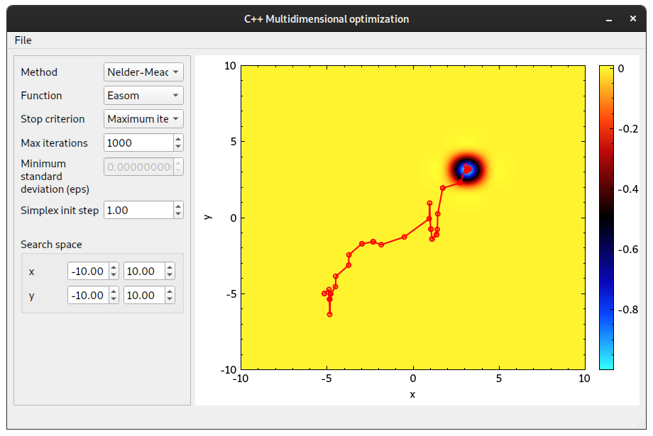

Optimization Methods
Compilation
git clone --recurse-submodules https://github.com/isheshukov/statmod-20-cpp.git mkdir statmod-20-cpp/build cd statmod-20-cpp/build cmake -DCMAKE_BUILD_TYPE=Release .. make ./app/nelder-mead
Usage
USAGE: optimization_methods [FLAGS] [OPTIONS] initial_point FLAGS: -g, --gui Start in GUI mode OPTIONS: -m, --method <method> ... nelder_mead, random -f, --function <function> ... sphere, easom, rosenbrock, rastrigin, himmelblau -s, --stop-criterion <stop_criterion> ... min_std_dev, num_iterations -m, --max-iterations <max_iterations> ... for min_std_dev and num_iterations -e, --eps <eps> ... for min_std_dev NELDER-MEAD OPTIONS: -i, --initial-simplex_step <initial_simplex_step> RANDOM SEARCH OPTIONS: -e, --explore-probability <explore_probability> -d, --delta <delta> -a, --alpha <alpha> SEARCH SPACE OPTIONS (2D only): -x, --xStart <xStart> -x, --xEnd <xEnd> -y, --yStart <yStart> -y, --yEnd <yEnd> -h, --help <help> -v, --version <version> ARGS: initial_point ... Initial point of optimization